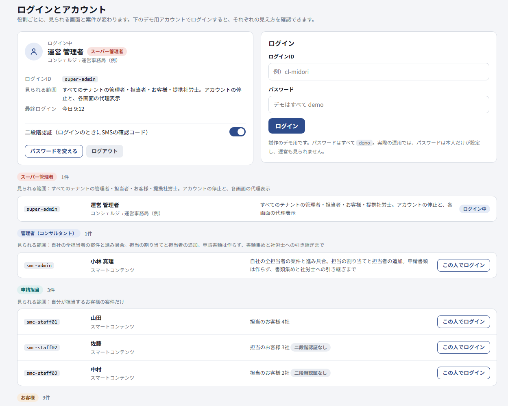
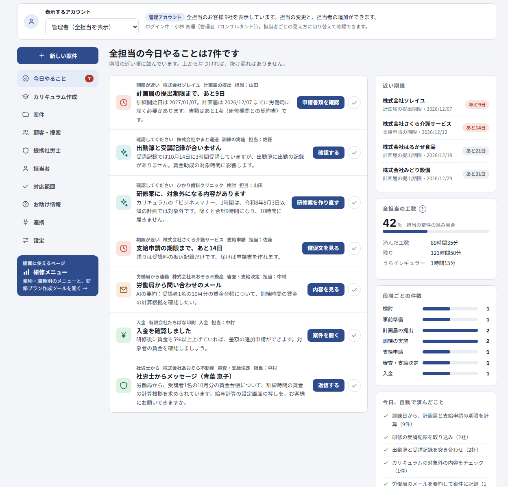
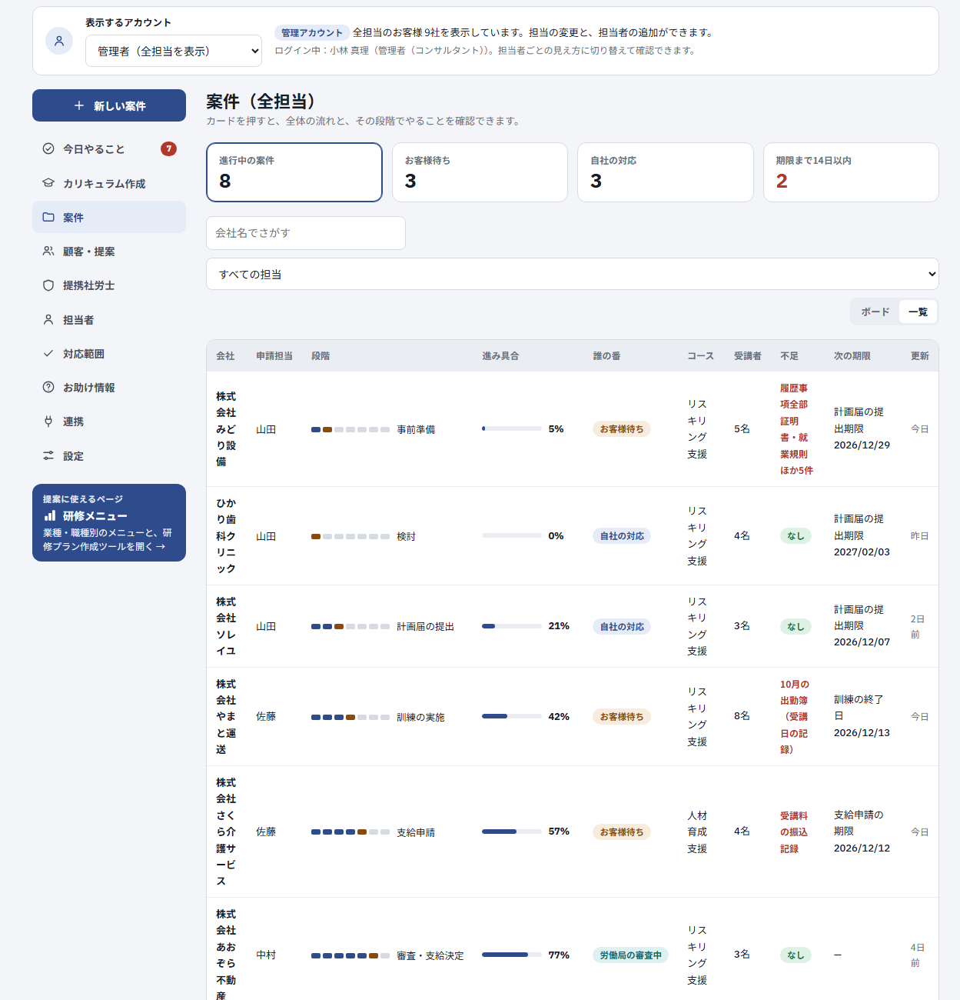
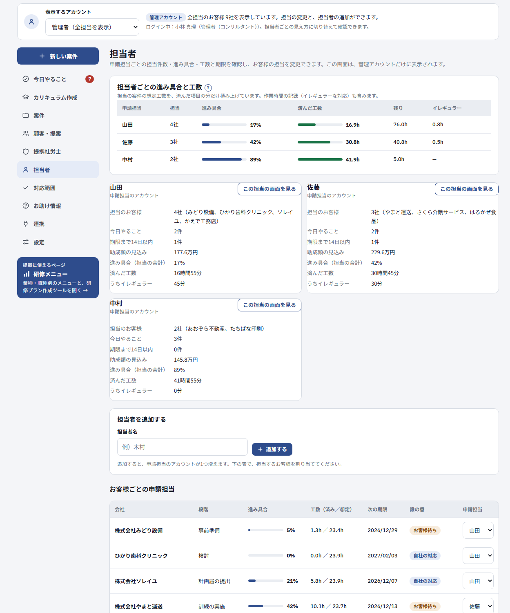
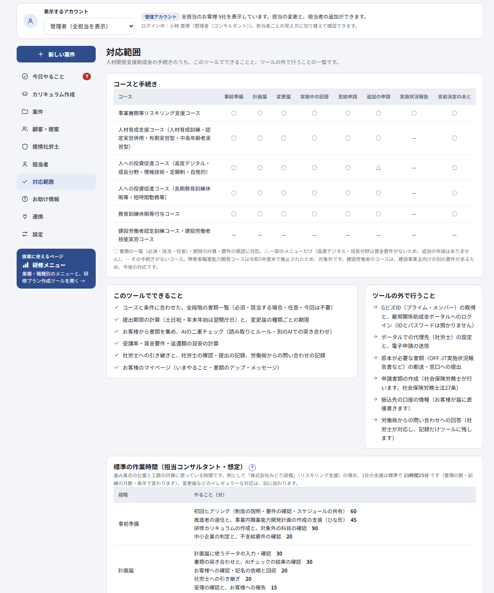
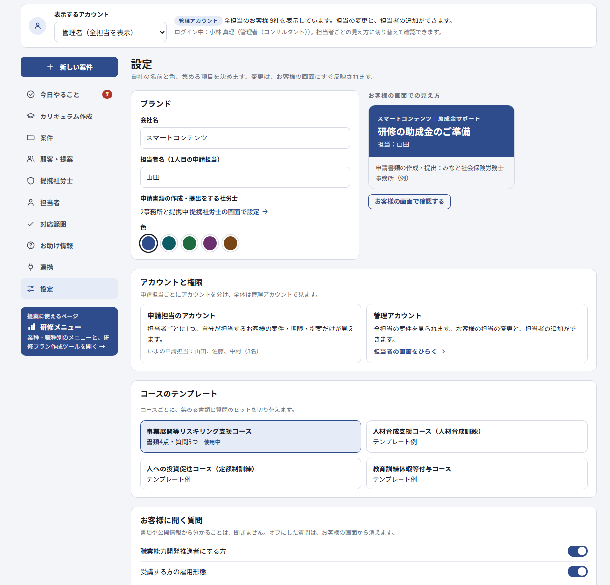
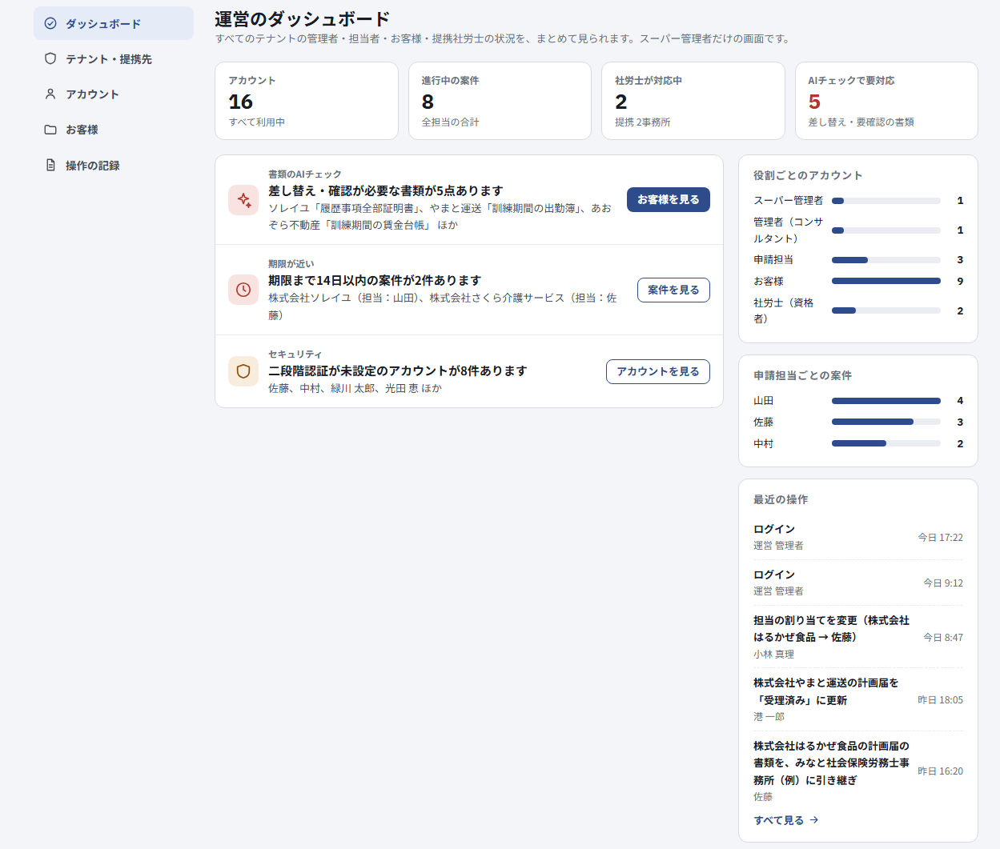
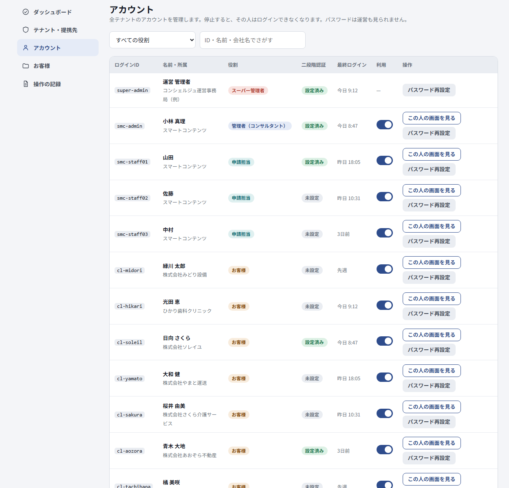

管理者（コンサルタント）・スーパー管理者向け
人材開発支援助成金コンシェルジュ管理者マニュアル
全担当の進み具合と工数を見て、担当を割り当てる。
アカウントと操作の記録を守る。管理者の仕事をまとめました。
2026年11月版（試作） 画面の会社名・人名はすべて架空の例です
目次
知りたいことから、開けます
あわせて読む案件の中の操作（書類とAIチェック・申請書類など）は「担当スタッフ向け 操作マニュアル」に、くわしく載っています。
目次
01管理者の役割
管理者はチーム全体、スーパー管理者は運営全体を見ます
管理者（コンサルタント）
自社の全担当者の案件を見る
- 全担当の「今日やること」と工数を見る
- メニューに「担当者」が出る：進み具合・工数の比較
- お客様の担当替えと、担当者の追加
- 設定：ブランド・お客様に聞く質問・AIチェックのルール
- 申請書類は作らず、書類集めと社労士への引き継ぎまで
スーパー管理者
すべてのテナントと運営を見る
- 「運営」の画面：ダッシュボード・テナント・お客様
- アカウントの追加・停止・再開、パスワード再設定のリンク送付
- 各画面の代理表示（その人と同じ画面で確かめる）
- 操作の記録（ログイン・代理表示・担当替えなど。消せない）
- 管理者ができることは、すべてできます
| 役割 | 見られる範囲 | デモのID |
|---|---|---|
| スーパー管理者 | すべてのテナントの管理者・担当者・お客様・提携社労士 | super-admin |
| 管理者（コンサルタント） | 自社の全担当者の案件と進み具合（例：小林 真理） | smc-admin |
| 申請担当 | 自分が担当するお客様の案件だけ（山田・佐藤・中村） | smc-staff01〜03 |
| お客様／社労士 | 自社のマイページだけ／引き継がれた案件だけ | cl-… ／ sr-minato・sr-aoba |
01 管理者の役割
02ログインとアカウント
パスワードは本人だけ。運営も見られません

1234- 1ログイン中の役割名前・役割・見られる範囲・最終ログインが出ます。
- 2二段階認証ログインのたびにSMSの確認コード。全員オンにします。
- 3パスワードを変える自分のパスワードは、自分で変えます。
- 4この人でログイン試作だけのデモ用ボタンです（パスワードはすべて demo）。
預からないものお客様のGビズID・パスワード、振込先の口座の情報。ツールにも保存しません。
パスワードの決まり本人だけが設定し、運営も見られません。忘れたときは、再設定のリンクを本人に送ります（10章）。
02 ログインとアカウント
03管理者の1日
見るのは3つ：期限・偏り・実績
STEP1 朝
全担当の「今日やること」
- 期限まで14日以内の案件はないか
- AIチェックで判定が分かれた書類はないか
- 社労士からの差し戻し・労働局からの連絡
STEP2 日中
「担当者」で偏りを見る
- 担当ごとの件数・進み具合・残りの工数
- 残りが多い担当から、担当替えをする
- 新しい人は「担当者を追加する」
STEP3 週に1回
実績と標準を比べる
- イレギュラーの工数が増えていないか
- 「対応範囲」の標準の作業時間を見直す
- 設定の質問・AIチェックのルールを見直す
見る今日やること全担当の用事を期限順に
比べる担当者件数・進み具合・工数
動かす担当替え・追加お客様ごとに選ぶだけ
見直す対応範囲・設定標準の時間とルール
ポイント管理者は案件の中の作業もできますが、まずは「全体を見て、担当に任せる」が基本です。案件の操作は担当スタッフ向けマニュアルを見てください。
03 管理者の1日
04全担当の今日やること
全担当の用事を、期限の近い順に見ます
- 1表示するアカウント「管理者（全担当を表示）」と、各担当の見え方を切り替えて確かめられます。
- 2担当の名前どの担当の用事かが、1行目に出ます。
- 3近い期限全担当の中で、期限の近い案件です。
- 4全担当の工数全体の進み具合・済んだ工数・残り・うちイレギュラーです。
申請担当の画面では同じ場所が「あなたの工数」になり、その人の担当分だけが出ます。

123404 全担当の今日やること
05案件（全担当）
一覧にすると、担当ごとの遅れが見えます
- 1担当で絞り込む「すべての担当」から1人を選ぶと、その人の案件だけになります。
- 2申請担当管理者の一覧にだけ出る列です。
- 3進み具合段階ごとの作業の積み上げです。止まっている案件に気づけます。
- 4誰の番お客様待ちが長い案件は、担当に催促を頼みます。
- 5不足赤い文字は、まだ届いていない書類です。
ボードでも右上で「ボード」に切り替えると、段階ごとのカードで見られます。

1234505 案件（全担当）
06担当者
担当ごとの進み具合と工数を比べます
- 1担当者ごとの表担当の件数・進み具合・済んだ工数・残り・イレギュラーです。
- 2進み具合担当の案件の想定工数を、済んだ項目の分だけ積み上げた％です。
- 3済んだ工数緑の棒が長いほど、作業が済んでいます。
- 4イレギュラー変更届や問い合わせなど、予定外の作業の時間です。
- 5この担当の画面を見るその担当と同じ見え方で、今日やることや案件を確かめます。
この画面は管理アカウント（管理者・スーパー管理者）だけに出ます。

1234506 担当者
06担当者
担当替えは、選び直すだけです
- 1担当者名新しく入った人の名前を入れます。
- 2追加する申請担当のアカウントが1つ増えます。
- 3お客様ごとの申請担当段階・進み具合・工数・次の期限・誰の番を見て決めます。
- 4担当を選ぶ選び直すとすぐに替わります。替えた記録は「操作の記録」に残ります。
- 5工数（済み／想定）残りの多い案件を、手の空いた担当へ。
担当替えのあと新しい担当に、「やりとり」のメモと、お客様待ちの書類を伝えてください。お客様への連絡も忘れずに。
12345
06 担当者
07対応範囲と工数
できることの範囲と、標準の作業時間

12- 1コースと手続き○は書類の一覧・期限の計算・要件の確認に対応しています。
- 2△と—△は一部のメニューだけ、—はその手続きがないコースです。
34
- 3標準の作業時間進み具合の比重と工数の計算に使う時間です。1社の標準は約23〜25時間（例）。
- 4やること（分）段階ごとの作業の分数。変更届は1件60分のイレギュラーです。
分数は仮の標準値実績と比べて見直します（本番では設定で変えられる予定）。
07 対応範囲と工数
08設定
自社の名前と色、集める項目とチェックのルール
- 1ブランド会社名と担当者名。お客様の画面にすぐ反映されます。
- 2色お客様の画面の色を選べます。右で見え方を確認できます。
- 3アカウントと権限申請担当と管理アカウントのちがい。担当者の画面へ進めます。
- 4コースのテンプレートコースごとに、集める書類と質問のセットを切り替えます。
書類のAIチェックのルール（設定の下のほう）
| 履歴事項全部証明書の有効期間（発行日から） | 3か月以内（1・2・3・6か月から選ぶ） |
| 10人以上の会社は、届け出た就業規則か確認 | オン／オフ |
| 受講料の振込額が、受講料の合計と同じか確認 | オン／オフ |
| 有期契約の人が、訓練中に契約が切れないか確認 | オン／オフ |
3か月は社内ルール公式資料に有効期間の定めは見つかっていません。提出先の労働局に確認してください。ルールを変えると、チェック済みの書類は「再チェックが必要」になります。

123408 設定
09社労士法27条
提携の社労士に引き継ぐなら、下書きは作りません
提携先の社労士事務所（ふつうの使い方）
運営は「書類集めと進行管理」まで
- 案件の「申請書類」には「書類を作る」が出ません
- 社労士の画面の「下書きを作る」で作り、運営側は読むだけ
- 確認印がないと、提出を記録できません
- お客様と社労士事務所の契約は、両者が直接結びます
自社（社労士事務所の場合）
自社で作成・提出まで
- 「提携社労士」の画面で「自社」を選んだときだけ
- 下書きを確認し、最新の様式で作って提出します
- 提出したら「提出済みにする」を押します
- 社労士の電子申請は共通要領様式第2号＋証票の写し。委任状は社労士以外の代理人だけです
なぜ社会保険労務士でない人が、報酬を得て申請書類を作ったり提出を代わりにしたりすることはできません（社会保険労務士法27条）。実際に公開する前に、社労士・弁護士の確認を受けてください。
09 社労士法27条
10運営の画面（スーパー管理者）
ダッシュボードで、注意が必要なことだけを見ます
- 1数字のタイルアカウント数・進行中の案件・社労士が対応中の件数です。
- 2AIチェックで要対応差し替え・要確認の書類の数。赤は要対応です。
- 3注意の一覧書類・期限・差し戻しを、ボタン1つで開けます。
- 4セキュリティ二段階認証が未設定のアカウントが出ます。
- 5役割・担当ごとの数アカウントと、申請担当ごとの案件数です。
- 6最近の操作ログインや担当替えなど。「すべて見る」で操作の記録へ。

12345610 運営の画面
10運営の画面（スーパー管理者）
アカウントの停止・代理表示・再設定
- 1さがす役割・ID・名前・会社名で絞り込みます。
- 2二段階認証未設定 の人には、設定を頼みます。
- 3利用（停止）オフにすると、その人はすぐログインできなくなります。オンで再開。
- 4この人の画面を見る代理表示です。始めと終わりが操作の記録に残ります。
- 5パスワード再設定本人に再設定のリンクを送ります。パスワードは運営も見られません。
追加は画面の下の「アカウントを追加する」で申請担当・管理者を。お客様は案件を作ると、社労士は提携先を追加すると自動でできます。

1234510 運営の画面
10運営の画面（スーパー管理者）
操作の記録は、だれも消せません
 123
123- 1記録は消せませんログイン・代理表示・アカウントの変更・案件の引き継ぎなどです。
- 2日時と、誰が管理者・担当・社労士、誰の操作かが分かります。
- 3操作例：担当の割り当てを変更（会社名 → 新しい担当）。
二段階認証
ログインのたびにSMSの確認コード。未設定の人はダッシュボードに出ます。
停止
退職・異動などで使わなくなったアカウントは、利用をオフにします。
代理表示
問い合わせの確認に使います。必要なときだけ、終わったらすぐ戻ります。
IDとパスワード
お客様のGビズID・パスワードは預かりません。本人のパスワードは本人だけ。
試作の注意本番の運用には、二段階の認証・データベース・暗号化した保存・監査ログ・実際のAIとOCRの準備が必要です。
10 運営の画面
10ナレッジ
マニュアルや資料は、ナレッジにまとまっています
 12345
12345- 1左のメニュー「ナレッジ」操作マニュアル・営業資料・よく使うリンクが一か所にあります。
- 2分類でしぼり込むすべて／マニュアル／営業資料／その他。数字は件数です。
- 3ことばで探す「AIチェック」「確認印」などで、資料の名前と説明から探せます。
- 4どのマニュアルを読めばいい？お客様・申請担当・管理者・社労士の役割ごとに案内します。
- 5開く・PDF「開く」でブラウザ表示、「PDF」で保存。お客様にはお客様向けを渡します。
管理者だけ営業資料と宣伝用LPが見えます。下の「資料を追加する」で社内ルールやリンクも足せます（試作では再読み込みで消えます）。
10 ナレッジ
11困ったとき
よくある質問
担当者が休む・辞めることになりました
「担当者」の「お客様ごとの申請担当」で担当を替えます。辞める人のアカウントは、スーパー管理者が利用をオフにします。
新しい担当者を入れたい
管理者は「担当者を追加する」、スーパー管理者は「アカウントを追加する」から。本人にはパスワード設定のリンクが届きます。
パスワードを忘れたと言われました
スーパー管理者が「パスワード再設定」でリンクを送ります。パスワードを聞いたり、教えたりはしません。
工数が実際の感覚と合いません
分数は仮の標準値です。予定外の作業は「作業時間の記録」で足し、実績と比べて標準を見直します。
履歴事項全部証明書の「3か月」は決まりですか
社内ルールの初期値です。労働局に確認し、設定で1・2・3・6か月から選べます。
お客様からGビズIDのパスワードを渡されました
受け取らず、保存もしません。ポータルへのログインはお客様本人が行い、代理先（社労士）を設定してもらいます。
「書類を作る」ボタンが出ません
提携の社労士に引き継ぐ案件では、運営側は下書きを作りません（27条）。下書きは社労士の画面で作られます。
代理表示したことは残りますか
はい。始めと終わりが「操作の記録」に残り、誰も消せません。
11 困ったとき